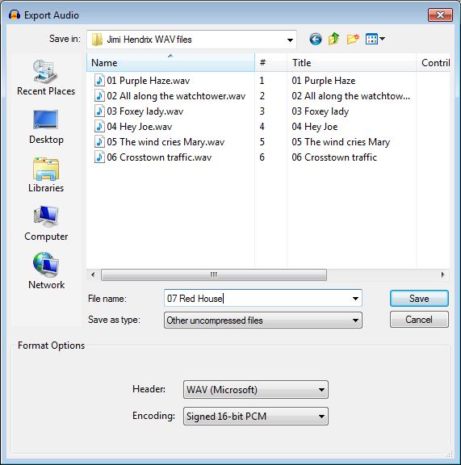

Other uncompressed files Export Options
From Audacity Development Manual
- Accessed by: then choosing Other uncompressed files from the Save as type dropdown menu.
- 
- Also accessed by: then choosing Other uncompressed files from the Save as type dropdown menu. In this case the options dialog will appear in the center of the Export Multiple dialog.
Uncompressed Export Setup
Header
Specifies the "type" or extension of the exported file.
"Raw (header-less)" or "RF64 (RIFF 64)" headers (with PCM encoding in either case) may be used if extremely large files similar to WAV are required. The RF64 size limit is about 16 exabytes, making it suitable for very long multi-channel files.
Encoding
Determines the codec and where appropriate, the sample format (for example, 16-bit) of the audio. The fewer the number of bits, the less accurately the audio waveform will be represented, but the smaller file size that will be required.
Only the most commonly used encoding types are shown below. Those that use less than 16-bit format (or are lossy codecs like GSM) are usually optimized for specific purposes such as speech telecommunication. With the possible exception of (A)DPCM, higher quality audio for the same reduced file size can generally be obtained by using other lossy codecs like MP3, OGG or AAC. These use psychoacoustic modelling to try and make the retained audio sound similar to the original.
- Signed/unsigned PCM: These formats represent the audio data by integer numbers. There are 8-bit, 16-bit, 24-bit, or 32-bit choices.
- Float: These formats represent the audio data by floating-point numbers. This allows a much wider range of sample values to be represented, further increasing its accuracy. There are "32-bit" and "64-bit" choices.
- U-Law, A-Law: 8-bit formats using different types of companding algorithms. These reduce the dynamic range of the audio when written to the file, but restore it when played back.
- ADPCM, DPCM: ADPCM are 4-bit formats that sound near-identical to PCM except where there is a lot of low frequency content. There are various ADPCM choices according to the header chosen, such as IMA, Microsoft, G721, G723 and VOX. ADPCM and DPCM both save storage space by predicting the next sample, and encoding the PCM values only as differences between the predicted and actual value. ADPCM saves further space by varying the size of the quantization step.
- GSM 6.10: A lossy voice codec producing small file sizes, used on GSM mobile digital telephone networks.